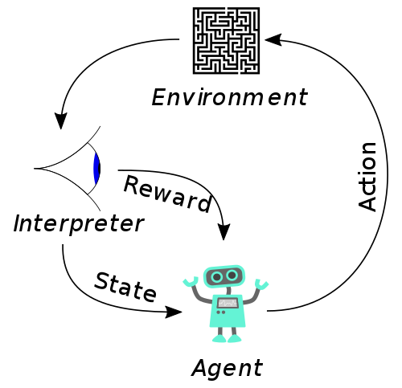

Healthcare in the Era of Intelligent Machines
Mehran Pesteie
UBC Robotics and Control Lab
March 2019
Introduction
Intelligence:
- The ability to learn or understand or to deal with new or trying situations (Webster dictionary)
Artificial Intelligence:
- The ability to build intelligent machines and computer programs, which can do analysis, reasoning, planning and inference in various situations.
- Human-like AI: Perform tasks like humans i.e., model the thought process.
- Rational-like AI: Achieve goals with predefined measures i.e., model the outcome.
AI is the new electricity. (Andrew Ng, Stanford University.)
What is involved in AI
- Perception
- A set of sensors to observe the environment, e.g. cameras, microphones, lasers, GPS and etc.
- Adaptation
- A set of rules that define how to react to the new environment.
- Reasoning
- A mechanism to solve new problems.
General Intelligence
- Turing Test: Can machines think? (A. Turing 1950) Can a machine show intelligent behavior indistinguishable from that of a human?
- Requirements
- Visual recognition
- Natrual language processing
- Access to a knowledge base
- Summarization algorithms
- Reasoning and inference

AI vs. machine learning vs. deep learning
Some real world applications
Autonomous driving

Medical image analysis
Airport ground traffic control

Transit scheduling
Highlights
- First computer learning program (Samuel, 1952)
- First neural network (Rosenblatt, 1957)
- Backpropagation (early 60's)
- NetTalk: pronounce words like humans (1985)
- Deep Blue (1997)
- Deep learning (2006)
- Watson beats humans at Jeopardy (2011)
- Google Brain started (2011)
- Facebook’s DeepFace (2014)
- Amazon’s DL platform (2015)
- Microsoft’s distributed DL platform (2015)
- 3000 AI researchers sign a letter regarding dangers of AI (2015)
- Google’s Alpha Go (2016)
Machine learning


The process of extracting patterns from a dataset using statistical models.
- Tasks
- Supervised: building a model with complete feedback from an expert (High accuracy, low scalability)
- Semi-supervised: a model with partial feedback from an expert (Med. accuracy, med. scalability)
- Unsupervised: No feedback is given during learning (Low accuracy, high scalability)
- Reinforcement learning: a model interacts with an environment and gets reward or penalty (requires lots and lots of data).
- The feedback is often given as a set of targets for each sample in the dataset.
Essentials of traditional ML
- A fair dataset.
- Tools and methods, which highligh attributes that are relevant to the task, e.g., edges of an image for simplifying shapes or keywords from a text document. These are called feature extractors
- A mathematical model that correlates the combination of features to the task.
- An algorithm that rewards the model when it is accurate and penalizes it, otherwise. This is called the "training algorithm".
- Example: Regression problem
A few well-known problem categories
- Regression: The predicted values are continuous, e.g., housing prices (supervised).
- Classification: The predicted values are categorical, e.g., is it raining now? (supervised)
- Clustering: Grouping the data based on significant differences and similarities between samples, a.k.a structures, e.g., summarization (unsupervised).
Artificial Neural Networks (ANN)
A mathematical framework that is inspired by the biological neural networks.
- An artificial neuron processes an input signal and passes it to the others.
- Each neuron is connected to the others via a set of weights, which are real numbers.
- The synapic connections are modeled by summation, followed by a pre-defined non-linear function, called activation.
- The goal of the training algorithm is to adjust the weights such that the model's predictions are accurate for all of the samples in the dataset.


Performance vs. Data (from Andrew Ng)
Validation
- Divide the dataset into 3 groups: train, validation, test.
- Use train set for training the model.
- Use validation set to see how it would perform on "simulated" real data.
- Use test set for approximation of the real accuracy.
- Analyze the error rates.
- High training error?
- High validation error?
- High test error?
- The model should not see the test set during training. (why?)
Gold standard
- Q: Ultimately, a model wants to reach the performance of humans, but how do you define human level performance, e.g., in medical image interpretation?
- Typical person?
- Typical doctor?
- expert doctor?
- team of expert doctors?
- A: Team of expert doctors.
- Lowest error and inter-observer variability
- High cost
Deep learning
- If there is "unlimited" amounts of data and processing power with "unlimited" memory, there is no need to write programs to extract patterns in the data.
- No need for feature extractors anymore!
- Instead, a complex model with a large parameter set can automatically learn what features are useful.
- Multiple layers of non-linear abstraction is a key feature of deep models.
{kind=link}